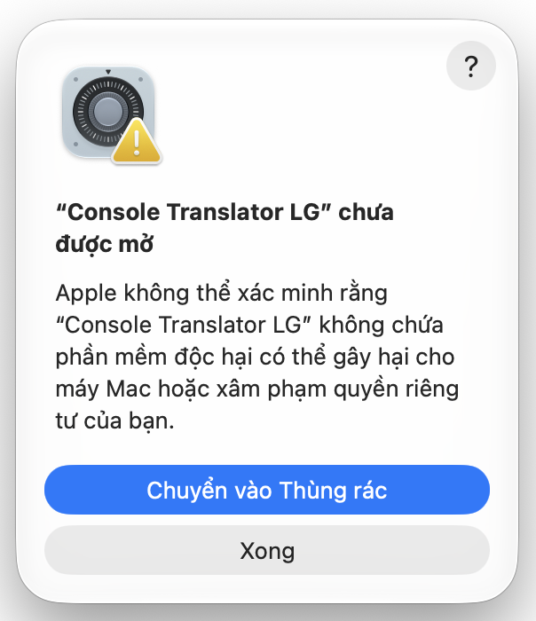
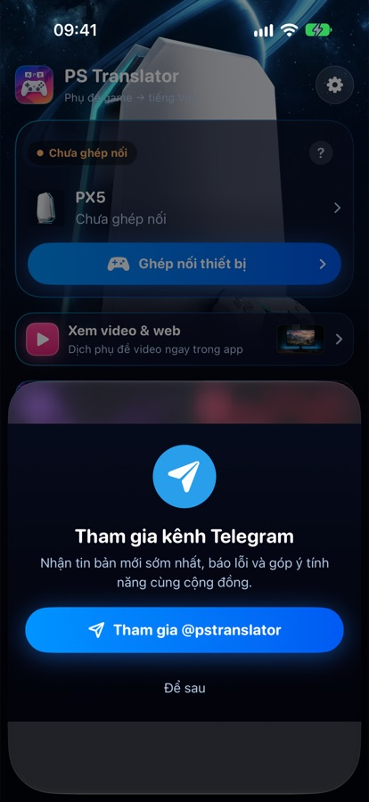
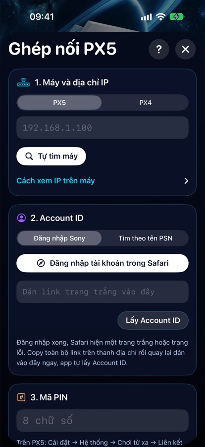
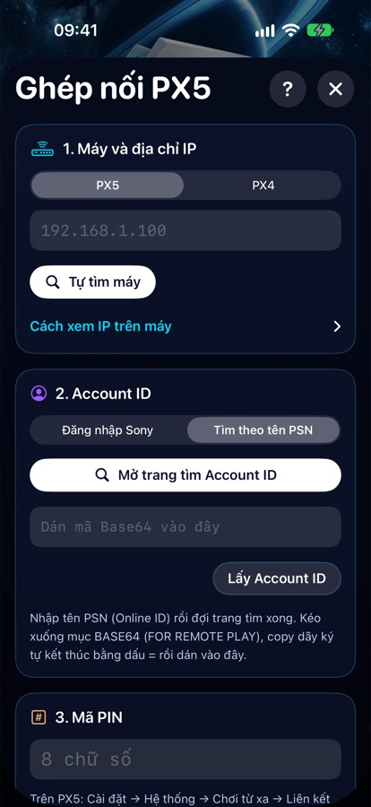
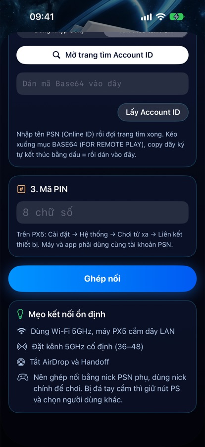
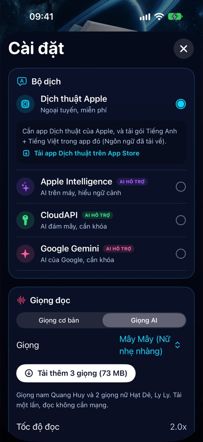
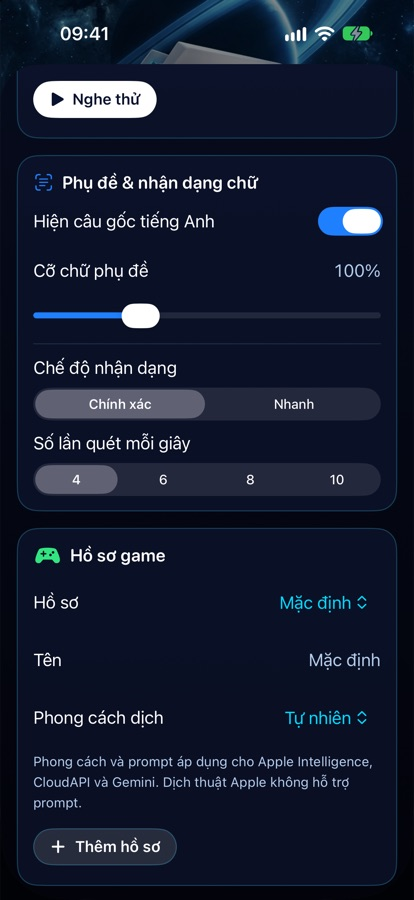
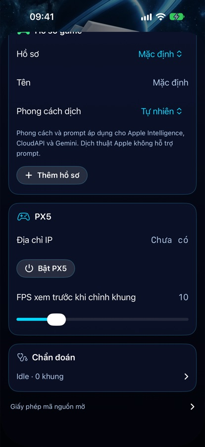

Console Translator
Dịch phụ đề game PS5 sang tiếng Việt và đọc to, ngay trên iPhone. Không cần capture card.
Tham gia kênh Telegram
Có link tải app (TestFlight), thông báo bản mới và nơi hỏi đáp, báo lỗi.
Vào kênh Telegram t.me/pstranslatorỦng hộ tác giả
Nếu thấy hữu ích thì mời mình ly cà phê để có thêm động lực cập nhật nhé.
TVPhụ đề ngay trên màn hình TV
Máy chơi game vẫn cắm HDMI thẳng vào TV. Chỉ phụ đề và giọng đọc đi từ iPhone sang TV qua Wi-Fi nên hình ảnh không bị giảm chất lượng hay thêm độ trễ.
Android TVCài bằng remote
Cài app
- Trên TV, cài Downloader by AFTVnews từ Google Play.
- Vào Cài đặt → Ứng dụng → Quyền truy cập đặc biệt → Cài đặt ứng dụng không rõ nguồn, cho phép Downloader.
- Mở Downloader, nhập link tải ở nút phía trên rồi cài file APK. Hoặc nhập mã Downloader 8966093 (bản 0.2.2). TV Xiaomi mua từ Trung Quốc dùng nút TV Xiaomi nội địa (mã Downloader 8342297), phụ đề chỉ hiện sau khi chuyển sang cổng HDMI.
Cấp quyền và mở app
- Mở Console Translator TV, bấm Cấp quyền hiển thị trên ứng dụng khác.
- Bật quyền cho app rồi bấm Back. Nếu được hỏi, cho phép app bỏ qua tối ưu hóa pin.
- App hiện mã 8 số và địa chỉ TV. Làm tiếp phần Ghép nối với iPhone ở dưới.
TV LG (webOS)Windows / Mac + mã
Dùng Windows 10/11 hoặc macOS 12 trở lên. Điện thoại vẫn chạy dịch; PC chỉ cài hoặc mở app nhận trên TV.
Tải bộ cài LG cho PC 1.2.6 Tải bộ cài LG cho Mac 1.0.0Giải nén file ZIP, không tải Source code. Nhận mã LGTV qua Telegram. Mã này khác mã beta Android và gói PRO trên iPhone.
1. Chuẩn bị TV, làm lần đầu
- Tạo tài khoản LG Developer. Trên TV, cài Developer Mode từ LG Apps / LG Content Store và đăng nhập.
- Bật Dev Mode Status, chờ TV khởi động lại. Mở Developer Mode, bật Key Server.
- PC, iPhone và TV cùng mạng. Ghi lại IP và Passphrase 6 ký tự đang hiện trên TV.
2. Cài bằng Windows
- Giải nén ZIP, mở Chay-Console-Translator.bat. Nếu thiếu Node.js, bấm Cài Node.js, cài bản LTS rồi mở lại công cụ.
- Nhập IP và Passphrase, bấm Kết nối TV. Kiểm tra đúng IP trước khi xác nhận khóa kết nối.
- Nhập mã LGTV đầy đủ, bấm Cài đặt lên TV, chờ hoàn tất. Công cụ tự chuẩn bị gói cài và cài đặt lên TV.
Cài bằng Mac: giải nén ZIP, kéo Console Translator LG vào Applications rồi mở app. Cần macOS 12 trở lên (Intel/Apple Silicon) và Node.js 22 trở lên. Nhập IP/Passphrase, kết nối TV rồi nhập mã LGTV và cài. Nếu macOS chặn mở, vào Cài đặt hệ thống → Quyền riêng tư & Bảo mật → Vẫn mở với ZIP từ GitHub chính thức.
Mac báo “Console Translator LG chưa được mở”


- Bấm Xong trong cảnh báo. Không chọn Chuyển vào Thùng rác nếu muốn tiếp tục cài.
- Mở Cài đặt hệ thống → Quyền riêng tư & Bảo mật, kéo xuống phần Bảo mật.
- Tại thông báo chặn Console Translator LG, bấm Vẫn mở / Open Anyway. Nhập mật khẩu Mac hoặc dùng Touch ID nếu được hỏi.
- Khi cảnh báo xuất hiện lại, bấm Mở / Open.
Nếu chưa thấy Vẫn mở, thử mở app lần nữa rồi quay lại mục Bảo mật. Chỉ thực hiện với bản tải từ GitHub chính thức. Hướng dẫn của Apple.
Mac nhớ thông tin TV trong Keychain. Mã đã gắn với Windows cần cấp riêng cho Mac. Mỗi lần chơi bấm Mở app trên TV trong công cụ Windows hoặc Mac.
3. Mỗi lần chơi
PC nhớ IP/Passphrase sau khi kết nối; nếu trên TV đổi, nhập lại. Thu hồi hoặc xóa mã cài chỉ chặn cài tiếp, app TV đã cài vẫn mở được. Khả năng hiện trên HDMI tùy mẫu TV.
Mã cũ 32 ký tự vẫn dùng được. PC 1.2.5 trở xuống không nhận mã LGTV mới: đóng bản cũ, giải nén 1.2.6 vào thư mục mới rồi mở file .bat.
Ghép nối TV với iPhoneDùng cho cả hai loại TV
- Trên iPhone, mở màn Dịch khi chơi TV rồi bấm nút TV trên thanh công cụ.
- Ở Loại TV, chọn Android TV hoặc TV LG.
- Chọn TV trong danh sách; nếu không thấy, nhập địa chỉ đang hiện trên TV. Nhập mã 8 số rồi bấm Kết nối.
- Chuyển TV sang HDMI của máy chơi game. Lần sau iPhone sẽ tự kết nối lại.
Mã ghép nối đổi mỗi phút nhưng chỉ cần nhập một lần. Cỡ chữ, màu, nền, vị trí và giọng đọc đều chỉnh trên iPhone.
Lỗi thường gặp trên TV
- LG không kết nối: kiểm tra Developer Mode còn hạn, Key Server đang bật, IP đúng và máy tính cùng Wi-Fi với TV.
- LG báo lỗi cài đặt: mở lại công cụ và thử cài lại; nếu vẫn lỗi, gửi ảnh cho hỗ trợ trước khi gỡ app.
- iPhone không tìm thấy TV: mở app TV, kiểm tra cùng Wi-Fi và quyền Mạng cục bộ trên iPhone, hoặc nhập IP bằng tay.
- Sai mã: nhập mã 8 số mới nhất đang hiện trên TV.
- Phụ đề biến mất: Android TV cần bỏ tối ưu hóa pin; LG webOS cần bấm Mở app trên TV lại nếu đã dùng nút Home.
1Cài app
App phát hành qua TestFlight, cách cài thử nghiệm chính thức của Apple. Không cần máy tính, không phải cài lại sau 7 ngày.
- Mở App Store, tìm và cài app TestFlight (biểu tượng chiếc máy bay màu xanh).
- Vào kênh Telegram, bấm vào link TestFlight được ghim.
- TestFlight mở ra, bấm Chấp nhận rồi Cài đặt.
2Chỉnh trên PS5 (làm một lần)
Cầm tay cầm PS5, vào Settings (biểu tượng bánh răng ở góc trên bên phải màn hình chính).
Bật chơi từ xa
- Enable Remote PlayBấm vào mục này, rồi bật đúng User PS5 mà app sẽ dùng để kết nối. Nếu chọn sai User, app sẽ không kết nối được.
- Hide Remote Play Connection StatusNên bật. Ẩn dòng thông báo "đang chơi từ xa" trên TV cho màn hình gọn khi chơi.


Cho app tự bật PS5 khi máy đang nghỉ
- Stay Connected to the Internet
- Enable Turning On PS5 from Network
3Ghép nối iPhone với PS5 (làm một lần)
Để PS5 tin cậy iPhone của bạn. Cần 3 thứ: địa chỉ IP của máy, Account ID (mã số tài khoản PSN) và mã PIN hiện trên TV.
Bước 1: Địa chỉ IP
Ở màn chính của app, bấm nút xanh Ghép nối thiết bị. Chọn loại máy rồi bấm Tự tìm máy, app tự điền địa chỉ IP của PS5.


Bước 2: Account ID, chọn 1 trong 2 cách
Cách 1: Đăng nhập Sony
- Bấm Đăng nhập tài khoản trong Safari.
- Đăng nhập tài khoản PSN đang dùng trên PS5. Mật khẩu chỉ nhập trên trang của Sony, app không thấy được.
- Đăng nhập xong, Safari hiện trang trắng hoặc trang lỗi, đó là bình thường.
- Chạm vào thanh địa chỉ ở trên cùng Safari, copy toàn bộ link (link có chữ
code=). - Quay lại app và dán ngay vào ô bên dưới nút. Link chỉ dùng được trong ít phút, nếu báo lỗi thì đăng nhập lại.
Cách 2: Tìm theo tên PSN Dễ hơn
- Trong app, chọn Tìm theo tên PSN rồi bấm Mở trang tìm Account ID.
- Gõ tên PSN (tên hiển thị khi chơi online) và bấm tìm. Đợi trang tìm xong.
- Kéo xuống tìm mục BASE64 (FOR REMOTE PLAY). Copy dãy ký tự ngay bên dưới, thường kết thúc bằng dấu
=. - Quay lại app, dán vào ô bên dưới nút. App tự nhận.

Thấy chữ Đã có Account ID màu xanh là xong.
Bước 3: Mã PIN
TV hiện mã 8 số kèm đồng hồ đếm ngược. Nhập ngay 8 số vào app rồi bấm Ghép nối.

4Chơi và dịch
Ghép nối xong, từ lần sau chỉ cần làm bước này.
- Ở màn chính của app, bấm Kết nối. Nếu PS5 đang nghỉ, app tự bật máy, đợi khoảng 30 giây.
- Vào game, bật phụ đề tiếng Anh (English) trong phần cài đặt của game.
- Trong app, bấm nút khung cắt và kéo khung trùm lên chỗ phụ đề hiện trên màn hình.
- Chơi bình thường bằng tay cầm. Nhân vật nói gì, app dịch và đọc to bằng tiếng Việt.
Chọn bộ dịch và giọng đọc
Bấm biểu tượng bánh răng ở góc trên màn chính để mở Cài đặt.


5Chọn văn phong dịch
Cùng một câu, mỗi game hợp một cách nói khác nhau. Chọn văn phong để bản dịch nghe đúng chất nhân vật.
Mỗi hồ sơ game lưu văn phong riêng. Ví dụ tạo hồ sơ "GTA" để giọng giang hồ, hồ sơ "RDR2" để giọng cao bồi, đổi game là đổi hồ sơ, không phải chỉnh lại.

Cho game
Câu gốc ví dụ: "Get in the car, we don't have time!"
Dễ nghe, xưng tôi, bạn. Hợp với hầu hết game.
Lên xe đi, chúng ta không còn thời gian đâu!
Bám sát câu gốc, không thêm bớt ý.
Vào xe đi, chúng ta không có thời gian!
Người nói xưng anh, gọi người nghe là em.
Lên xe đi em, bọn anh không còn thời gian đâu!
Xưng tao, mày, giữ tiếng lóng đúng chất đường phố.
Lên xe mau, tao với mày hết thời gian rồi!
Mộc mạc, phong trần như phim cao bồi.
Lên xe mau đi anh bạn, ta chẳng còn thì giờ đâu!
Cho video YouTube
Như đang trò chuyện, gần gũi, dễ nghe.
Giọng điềm tĩnh như phim tài liệu.
Trung lập, ngắn gọn, giữ đúng tên và số liệu.
Giữ đúng thuật ngữ, câu gọn, dễ hiểu.
Tự viết yêu cầu cho AI, ví dụ cách xưng hô hay tên nhân vật cần giữ nguyên.
Các câu dịch mẫu ở trên chỉ để minh hoạ, bản dịch thật có thể khác tuỳ bộ dịch.
Gặp lỗi? Bấm vào lỗi giống bạn
Không tìm thấy máy
- Kiểm tra iPhone và PS5 cùng một mạng Wi-Fi. Tắt VPN nếu có, không dùng Wi-Fi dành cho khách.
- Mở Cài đặt iPhone → Quyền riêng tư & Bảo mật → Mạng cục bộ, bật cho app.
- Vẫn không thấy thì nhập IP bằng tay. Trên PS5 vào Settings → Network → Connection Status → View Connection Status, xem dòng IPv4 Address (dạng 192.168.x.x).
Ghép nối thất bại
- Vào Enable Remote Play và kiểm tra đã bật đúng User PS5 mà app đang dùng để kết nối.
- Account ID phải đúng tài khoản đang chọn trên PS5.
- Mã PIN hết hạn rất nhanh, lấy mã mới rồi nhập ngay.
Ghép nối xong nhưng không vào được game
- Tắt Remote Play đang mở ở thiết bị khác (PC, điện thoại khác).
- Đợi khoảng 30 giây rồi bấm Thử lại.
- Vẫn lỗi thì xoá ghép nối cũ trên PS5 và ghép nối lại từ đầu.
Tay cầm bị ngắt khi app kết nối
Bấm nút PS giữa tay cầm, chọn lại tài khoản để chơi. Để không bị nữa, làm theo mẹo nick phụ ở bước 3.
Có hình nhưng không ra bản dịch
- Kiểm tra game đã bật phụ đề tiếng Anh, khung quét trùm hết chữ phụ đề.
- Dùng Dịch thuật Apple: tải gói Tiếng Anh, Tiếng Việt trong app Dịch thuật.
- Dùng Gemini hoặc CloudAPI: kiểm tra mạng và khóa API.
Có bản dịch nhưng không nghe đọc
Bật nút loa trên màn chơi, tăng âm lượng iPhone, kiểm tra có đang kết nối tai nghe Bluetooth không.
Hình giật hoặc hay rớt mạng
Cắm dây mạng (LAN) cho PS5 nếu được. iPhone nên dùng Wi-Fi 5 GHz và để gần router. Tạm dừng các máy đang tải game hay xem phim.